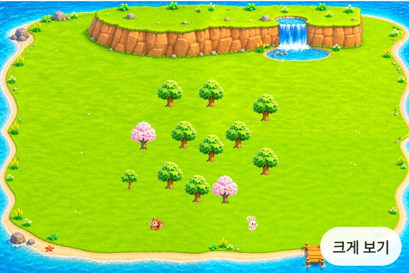

폰 앱 시안 03 · 결정 #37·#38
아이 숲 보기·꾸미기: 폰에서도
가족 폰 앱차에는 다음 정차 때 반영
11:12
운전 중인 분은 사용하지 마세요
하늘이의 숲
하늘이바다

나무 11그루 · 새싹 8개
다음 나무까지 새싹 2개 · 지금 심는 나무: 사과나무
꾸미기숲 맵
★는 차에서 부드럽게 달린 만큼 쌓여요(폰에서는 보기만)
11:12
운전 중인 분은 사용하지 마세요
꾸미기
저장

나무·동물·소품을 끌어서 옮겨요. 빈 땅에 놓을 수 있어요.
보관함끌어서 숲에 놓기
 ×2
×2×1
 ×1
×1 ×3
×311:12
운전 중인 분은 사용하지 마세요
꾸미기
차 확인 기다리는 중저장했어요
우리 차가 켜져 있으면 곧 반영돼요. 차 화면에는 다음에 멈췄을 때 보여요.
다른 폰에서 바꾼 '공원' 숲을 덮었어요. 맵마다 마지막에 저장한 것이 남아요.
이 시안에서 볼 것
- 숲 그림·나무·동물·꾸미기 소품은 차 앱과 같은 그림과 같은 숲 그리드(core:ui)를 폰에서 그대로 써요.
- 폰에서는 주행 중에도 동승자가 꾸밀 수 있어요. 대신 차 화면의 숲은 다음 정차 때 바뀌어 운전 중 차 화면이 갑자기 바뀌지 않아요(결정 #20).
- 폰의 저장은 요청이고, ★·소품 개수·칸 규칙은 차가 확인해요. 폰은 같은 규칙으로 먼저 보여 주고, 차가 확인하면 확정돼요.
- 두 사람이 같은 맵을 바꾸면 맵마다 마지막 저장이 남아요. 덮어쓴 경우 한 줄로 알려 줘요.
- 아이 별명은 가족 열쇠로 잠가서 보내고, 서버는 읽지 못해요.
docs/architecture.md 19-4·19-5 · 그림: 앱 숲 화면 캡처, 공원 맵·나무·동물(GPT), 소품 R27(GPT) · 배치는 예시